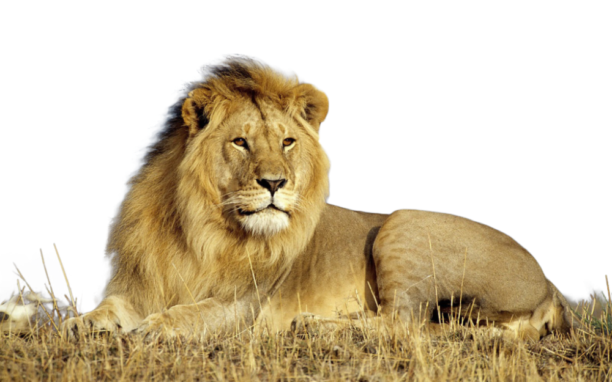

האריה התפתח באפריקה לפני בערך 800,000–1,000,000 שנה, לפני שנדד לאזורים ההולארקטיים.[4] רישומי מאובנים של אריות מצביעים על כך שהופיע לראשונה באירופה לפני 700,000 שנה. מהאריה הזה התפתח אריה המערות, שהופיע לפני בערך 300,000 שנה.[5] אריות נכחדו בצפון אירואסיה בסוף עידן הקרח האחרון (Quaternary glaciation), לפני כעשרת אלפים שנה.[6] ניתוח הבדלים ב-DNA מיטוכונדריאלי בין תת-מינים קיימים וכאלו שנכחדו העלה כי ההתפצלות מאוכלוסיית המקור החלה לפני כ-124,000 שנים. המרחק הגנטי הגדול ביותר הוא בין האריות באפריקה שמדרום לסהרה ובין האריה הברבארי ותת המינים האסייתים.[7] על פי ניתוח זה, האריות בדרום אפריקה מוצאם במזרח אפריקה, ואילו תת-המינים האסייתים כולל האריות שחיו במזרח התיכון – מוצאם בצפון אפריקה. משערים כי תקופת אקלים לח שהביאה להתפשטות יערות גשם ממפרץ גינאה מזרחה עד לשבר הסורי אפריקני בודדה את אריות צפון אפריקה ומערבה מהאריות שבמזרח אפריקה ובדרומה והביאה לפיצול הגנטי הראשון. פיצול נוסף התרחש בתקופת יובש והתפשטות מדבר הסהרה לפני כ-50,000 שנים שהפריד את האוכלוסייה בצפון אפריקה מזו שבמערב אפריקה.
האריה הוא המין השני בגודלו בסוג פנתר במשפחת החתוליים. הטיגריס גדול ממנו, ואילו היגואר והנמר קטנים ממנו. אורכו של אריה בוגר כ-3.30 מטרים, גובה כתפיו כ-1.2 מטרים, ומשקלו יכול להגיע עד 260 קילוגרם. הוא נפוץ בעיקר באזורי ערבות, חורשים וסוואנות. הזכר גדול מן הנקבה ושונה במראהו, בהיותו בעל רעמה המכסה את עורפו וכן חלק מגופו הקדמי. ישנה אוכלוסייה מסוימת בקניה בעלת רעמה דלילה מאוד הקרויה אריה צאבו. צבע פרוותם של האריות חום-צהוב, ראשם גדול וזנבם ארוך ובקצהו ציצית שיער. באצבעות הרגליים כריות שאליהן מוכנסים הטפרים כשהאריה או הלביאה במנוחה, ונשלפים בשעה שהם אורבים לטרף.
בעבר זכו האריות לתפוצה רחבה. הם התקיימו בכל אפריקה למעט במדבר סהרה וביערות גשם טרופיים, באסיה הם התקיימו ברחבי המזרח התיכון, תת היבשת ההודית והקווקז.[8] ואף התקיים מין אריה אירופי ביוון.[9] כיום האריה הוא מין אנדמי ליבשת אפריקה באזורים שמדרום למדבר הסהרה, למעט אוכלוסייה של כ-500 פרטים מתת-המין האסייתי, המוגנים בפארק הלאומי גיר בהודו.[10] האריות החלו להיעלם מאירופה לפני כ-2,000 שנה, ומהחלקים המערביים של אסיה לפני כ-1,000 שנה. כיום מרבית אוכלוסייתם מצויה באפריקה, בעיקר במזרח היבשת ובדרומה; אוכלוסיית האריות באפריקה נאמדת בכ־75,000 פרטים. באפריקה מצויים האריות באזורים שונים וכמעט שאין שוני התנהגותי או הבדלים במראה בין התת-מינים הידועים, מלבד גוון או אורך הרעמה. בכל זאת, אריות אסייתים נוהגים לשחות במים בעת שהם חוצים מכשולי מים, ואילו אריות אפריקה נרתעים מן המפגש עם המים, אם כי באופן מולד, כולם מסוגלים לשחות. ייתכן שישנם הבדלים נוספים אולם ההשוואה קשה משום האוכלוסייה הדלילה בהודו לעומת הזמינות הרבה של הפרטים באפריקה. ישנם מספר גורמים המשפיעים על התפוצה והשפע של האריה ביבשת אפריקה. האריה מעדיף לשהות בבתה, ערבות דשא וסוואנות, כלומר במישורים פתוחים.[10] זאת מפני שאזורים אלה תואמים לשיטת הציד בלהקה של האריה, בנוסף, אזורים אלה מאופיינים לרוב בטרף רב וקל לאיתור, כלומר זאת הסביבה לה האריה מותאם.[11] ישנם מספר גורמים המגבילים את גדילת אוכלוסיית האריות באפריקה. העיקרי מגורמים אלו הוא הגורם האנושי, כאשר ציידים מהווים את הסיכון הגדול ביותר עבור האריות ואחד מגורמי התמותה העיקריים עבור אריות באפריקה.[12]